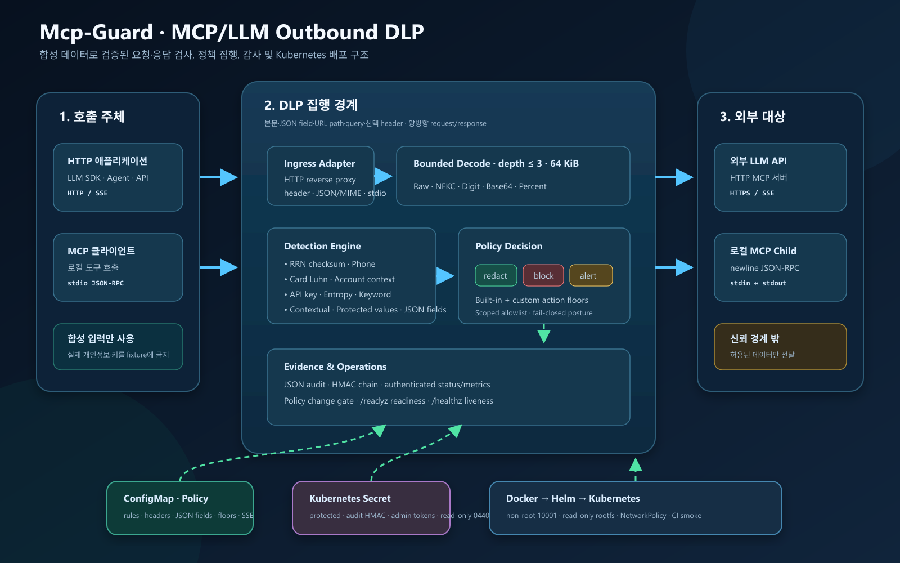
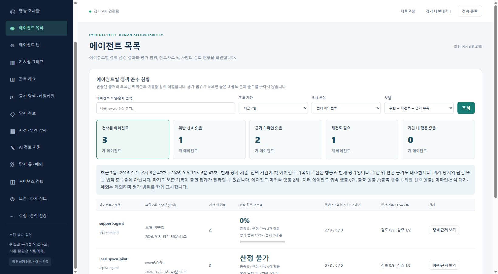
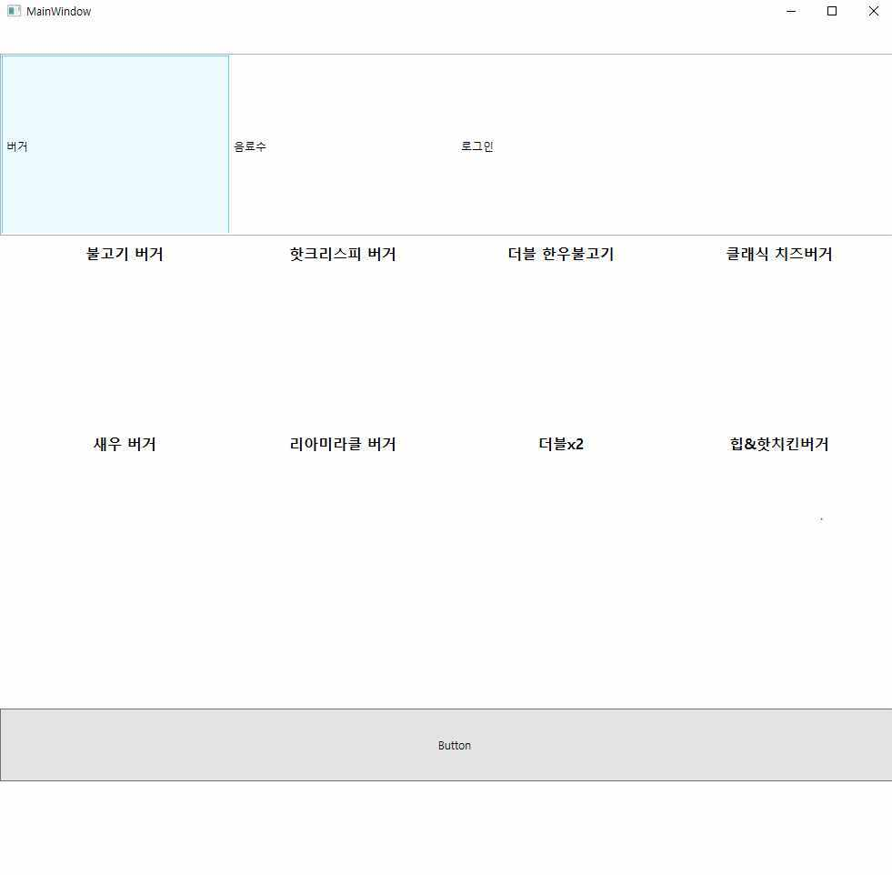

미디어솔루션연구개발팀 사원
2023.04–2025.03
미디어솔루션은 직원 50명 이하의 소기업입니다. 병역특례 산업기능요원으로 1년 11개월 근무하며 대형병원, 대형 컨벤션센터, 5성급 호텔 등 4개 기업 고객의 키오스크 CMS와 운영 인프라를 맡았습니다.
보안, 인프라, AI 보안 엔지니어
미디어솔루션에서 1년 11개월 동안 병역특례 산업기능요원으로 근무하며 대형병원, 대형 컨벤션센터, 5성급 호텔 등 4개 기업 고객의 키오스크 CMS와 운영 서버를 개발하고 운영했습니다. 고객 시스템에서 일어난 침해사고 두 건을 현장에서 대응했고, 웹 애플리케이션을 AWS에 다시 구축하며 외부에서 접근할 수 있는 경로를 줄였습니다. 지금은 개인 프로젝트로 AI 관련 보안 도구를 만들고 있습니다. LLM과 MCP 통신에서 개인정보와 기밀이 새어 나가지 않게 막는 프록시, 정적분석과 LLM 검증을 묶은 취약점 스캐너가 그 예입니다.
문제를 어떻게 찾았고 무엇으로 고쳤는지, 전과 후가 어떻게 달라졌는지 사례마다 정리했습니다.
보안 사례2023.04–2025.03
KISA 침해 통보와 서비스 중단 신고로 시작된 두 사고에 현장에서 대응하고, 무결성을 확인한 데이터만 AWS로 옮겨 서버를 다시 세웠습니다.
보안 사례2023.04–2025.03
대형병원 키오스크를 원격으로 관리하는 CMS를 혼자 만들어 운영했고, 세션 검증보다 권한 부여가 먼저 일어나던 결함을 고쳐 병원 보안점검을 통과했습니다.
도구 사례2026.07
정적분석으로 의심 구간을 먼저 좁히고 LLM 검증은 필요한 곳에만 쓰는 취약점 스캐너를 만들어, 실습 백엔드와 오픈소스의 권한 문제를 찾았습니다.

도구 사례2026.07
LLM과 MCP 도구로 나가는 요청에서 주민등록번호와 API 키 같은 민감 정보를 찾아 가리거나 막는 프록시를 만들었습니다.

도구 사례2026.09–2026.10
AI 에이전트가 했다고 보고한 일과 도구 기록이 실제로 남긴 결과, 그때의 권한과 정책, 참고 문서 버전을 대조해, 감사 담당자가 제품 밖에서도 검증할 수 있는 증거로 남기는 로컬 파일럿입니다.
사례 밖의 개인 프로젝트와 학습 기록입니다.
기술 문서2026년 개인 저술
위험도와 구현 비용을 기준으로 Docker 컨테이너 보안 대응을 다시 정리한 2026년 개인 기술 문서입니다.
프로젝트
허가된 워게임 환경에서 모의 침투를 연습하고, 공격 경로와 개선 방안을 보고서로 정리한 학습 기록입니다.
개인 학습2023년 개인 프로젝트
게시판과 권한별 접근 제한, 실시간 채팅을 갖춘 위키 서비스를 프론트엔드부터 백엔드까지 직접 만든 2023년 개인 프로젝트입니다.

개인 학습 프로젝트2022년
상품을 올리고 둘러보는 거래 서비스를 본떠 화면과 서버를 연결해 본 2022년 학습 프로젝트입니다.

학습용 개인 프로젝트2021.09–2022.01
2021년 9월부터 2022년 1월까지 주문 키오스크의 상품 선택부터 주문 전송까지 만들어 본 학습용 개인 프로젝트입니다.
미디어솔루션은 직원 50명 이하의 소기업입니다. 병역특례 산업기능요원으로 1년 11개월 근무하며 대형병원, 대형 컨벤션센터, 5성급 호텔 등 4개 기업 고객의 키오스크 CMS와 운영 인프라를 맡았습니다.